Surgical procedures · medical devices · complex evidence
Making medical, scientific, and technical evidence clear and accurate for people who are not experts, the core problem in demonstrative evidence.
Most of the work below was produced in my graduate program in biomedical visualization. Where a piece connects to litigation or clinical communication, I have said so directly.
Explaining how something works, step by step
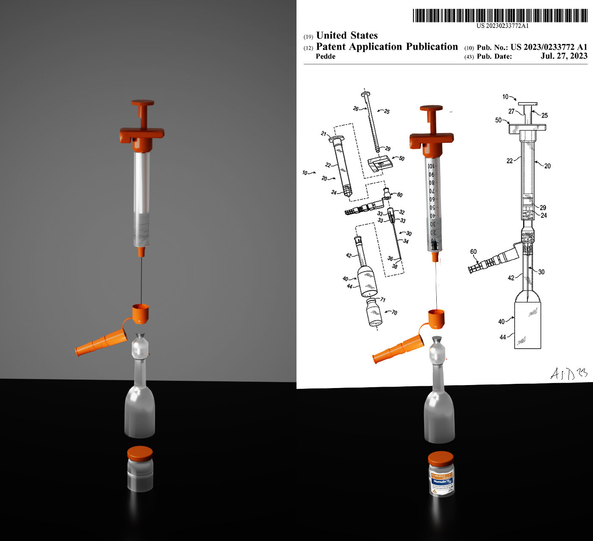
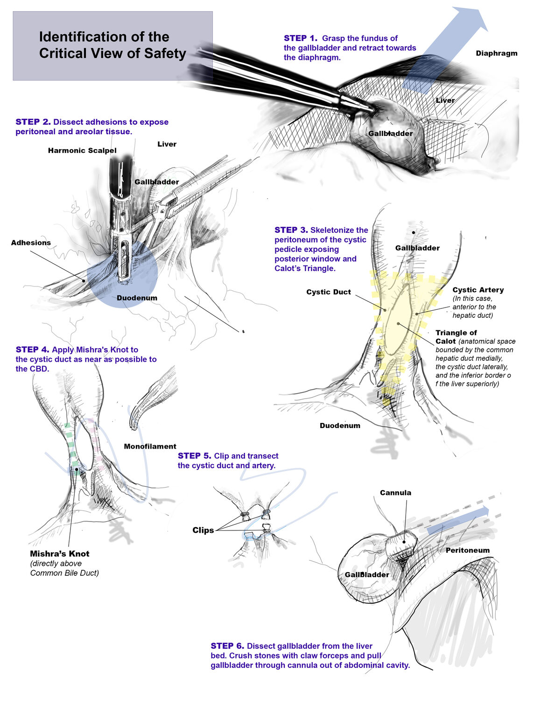
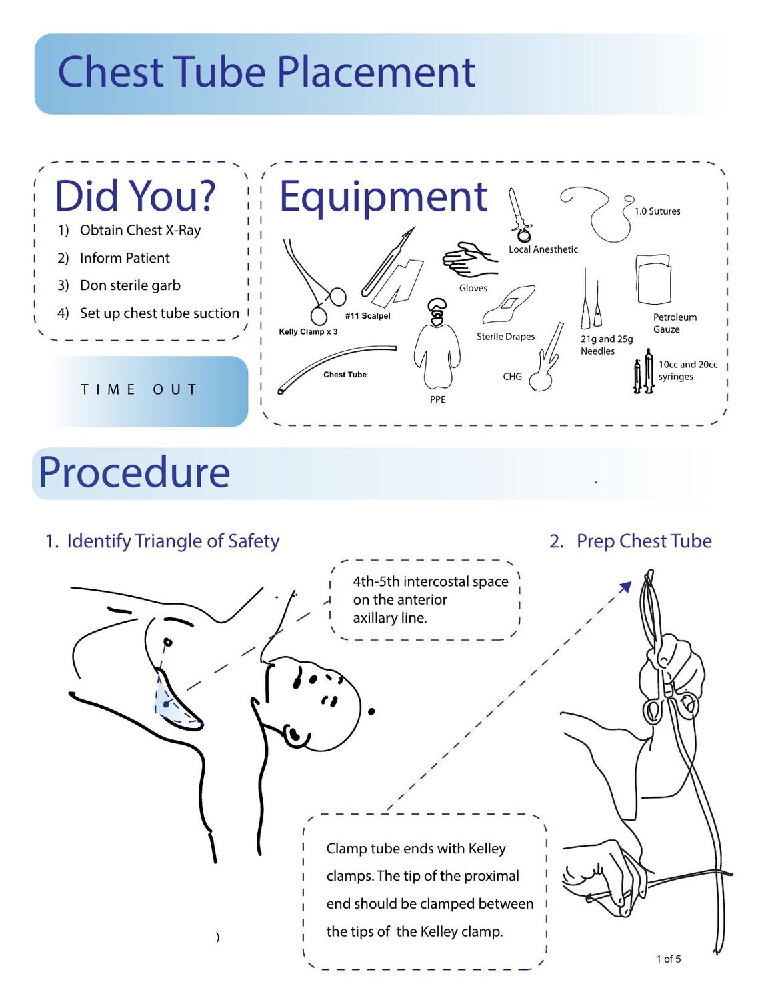
Translating research and imaging
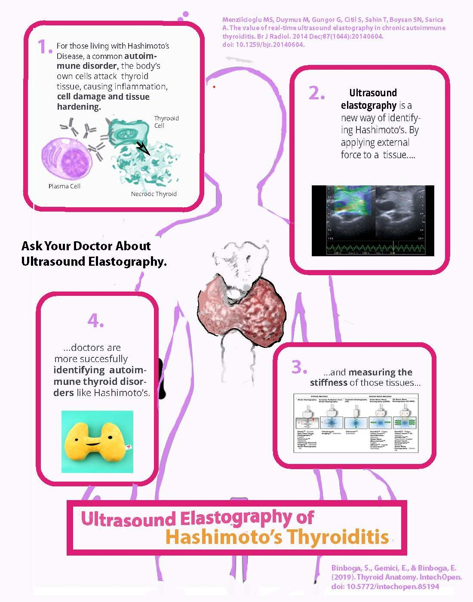
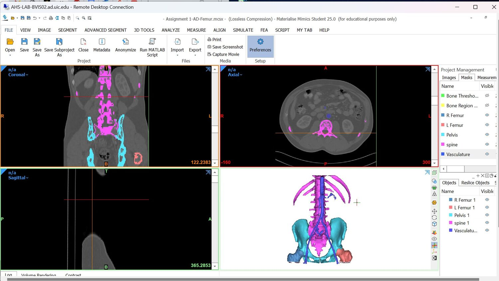
Accuracy and rendering
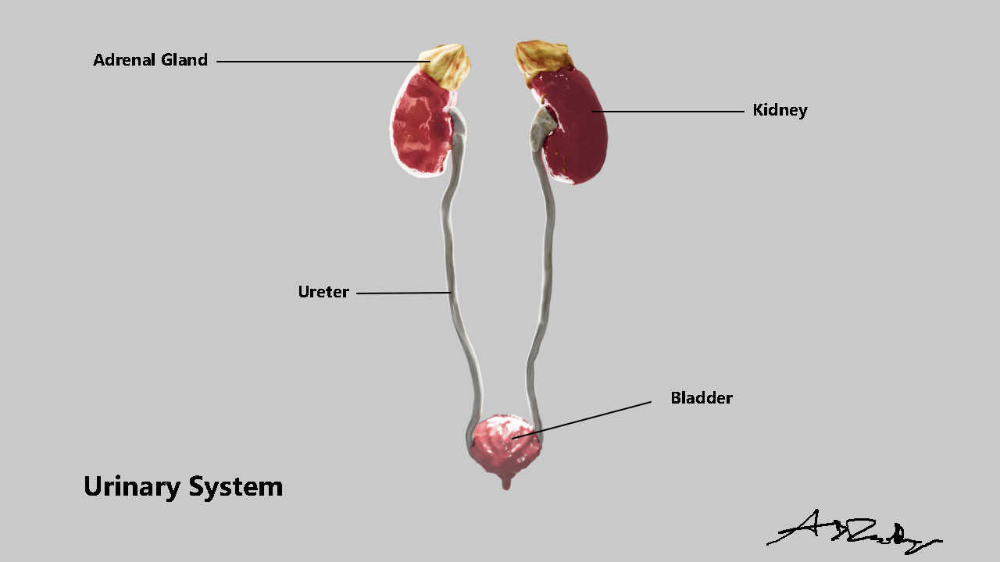
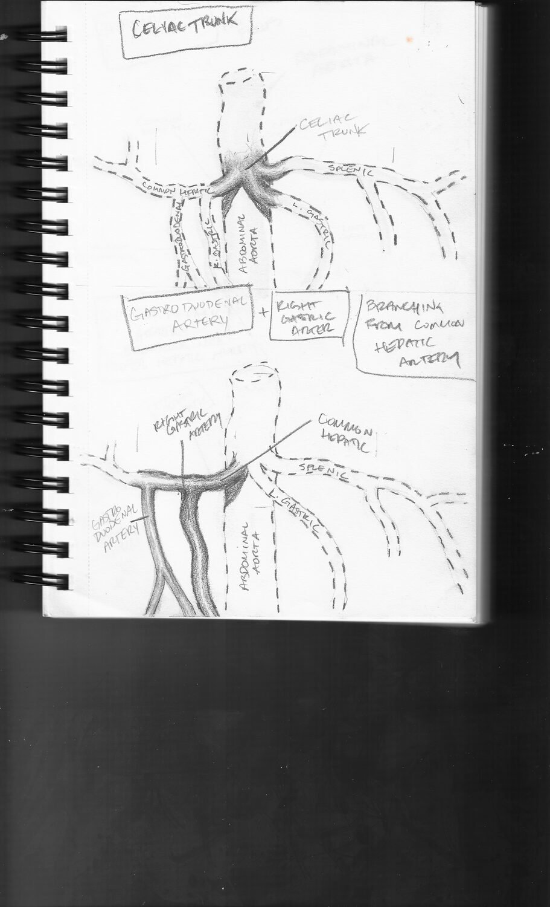
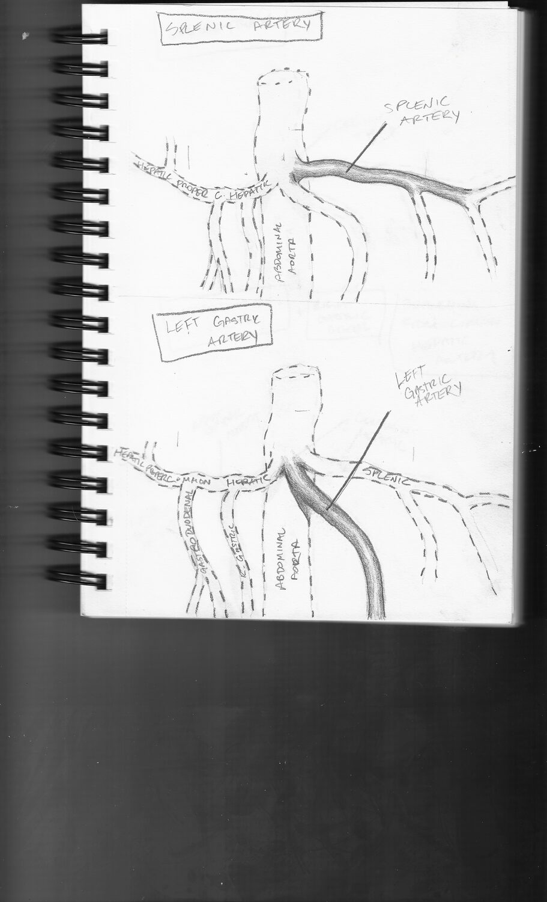
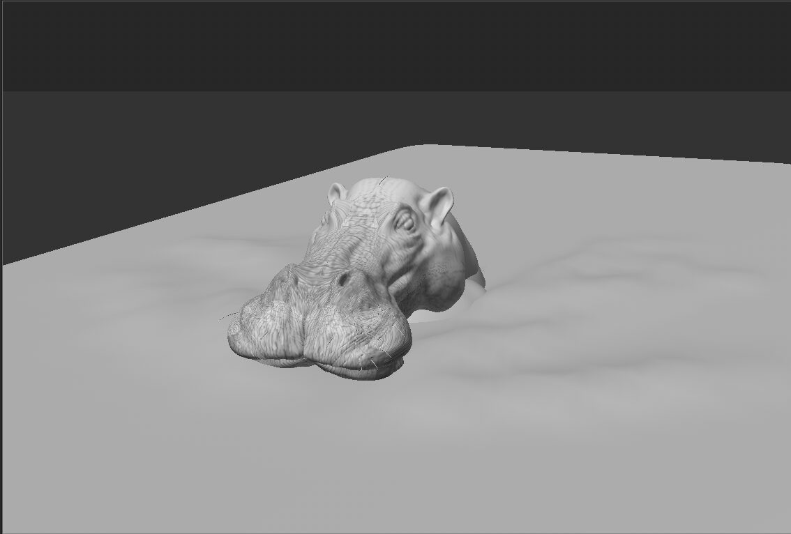
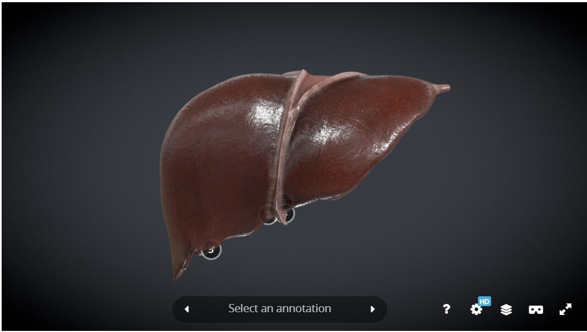
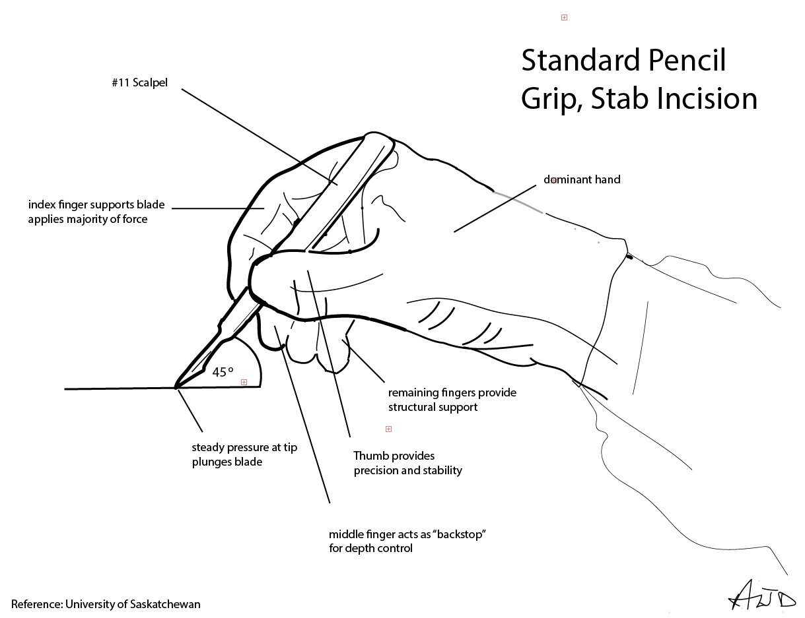
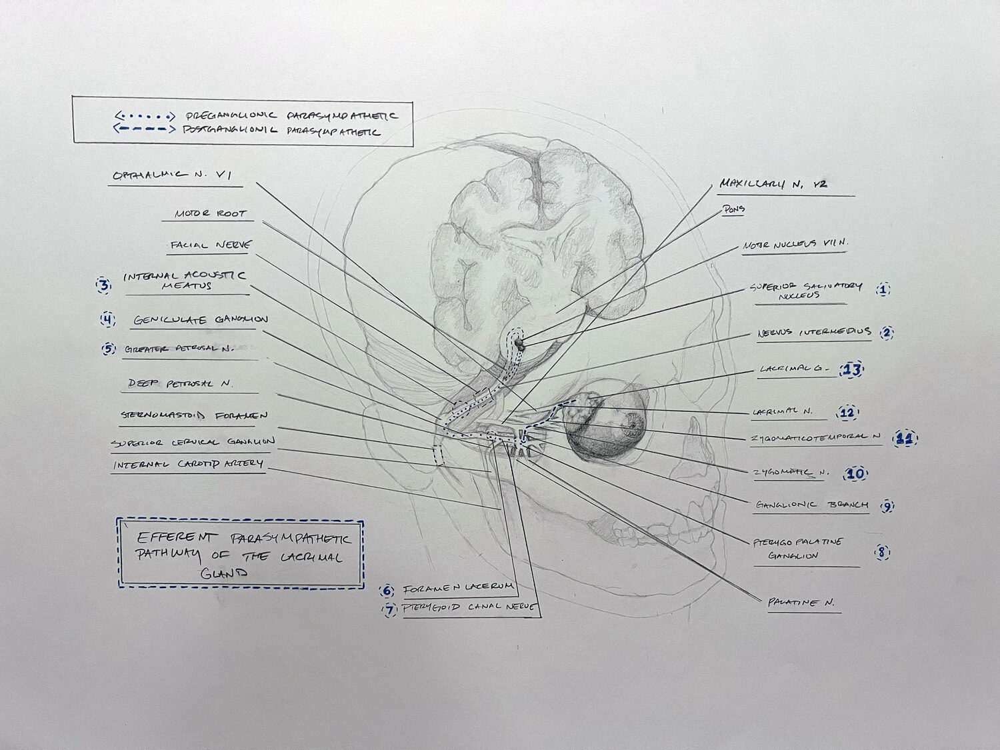
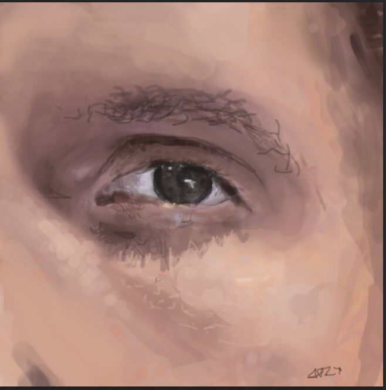